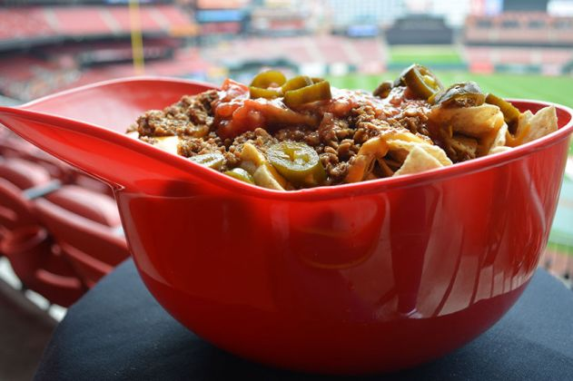
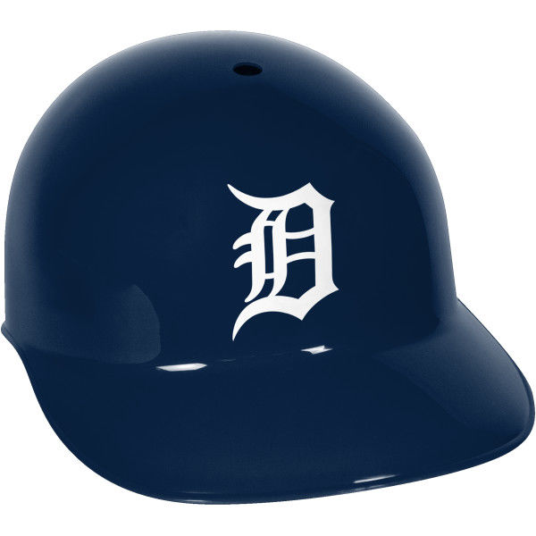

| #1 |
Chicago White Sox |
Out of the nacho helmets thus far, the Chicago White Sox one leads by leaps and bounds. Firstly, they use shredded cheese rather than the liquid nacho cheese. This helps it from becoming an overall mushy mess within the first 10 minutes. Additionally, they add vegetables on top to add crunch and freshness. You can get them with either shredded chicken, shredded pork, or ground beef. All options are great, but ground beef is our favorite. From the first chip to the last, the White Sox nacho helmet has never disappointed. |
 |
| #2 |
Milwaukee Brewers |
The Brewers have our second favorite helmet of the stadiums so far. Filled with ground beef, nacho cheese, sour cream, and pickled jalapenos, this one just edged out the Cardinals because of the sour cream. I feel like the more toppings you get the better it is, and sour cream is a nice tang that helps cut the richness of the beef and cheese. The downfall, like other later in the list, is the nacho cheese and ground beef make the chips soggy after a while. |

|
| #3 |
St. Louis Cardinals |
The Cardinals nacho helmet was also super tasty. Theirs was more of a stadium nacho with ground beef, nacho cheese, salsa, and pickled jalapenos on top. The major downfall of this one, and other nacho helmets though, is the liquid nacho cheese. The longer you have it, the mushier the chips get. I love crispy nacho chips for texture, so once that's gone I kind of lose interest. Overall, still a top pick and was worth the money. |
 Genius Kitchen
|
| #4 |
Seattle Mariners |
I feel bad that Seattle may have not gotten a fair shake on the list because it had a lot of potential. Firstly, it took FOREVER to find the stand that sold these. Second, by the time we got there in the second inning, they were out of meat, so we had to just get chips, cheese, sour cream, salsa, and pickled jalapenos. So by vegetarian nacho standards it was perfectly fine, but nothing exceptional by any means. If we make it back to a game, we'll try it again. |

|
| #5 |
Chicago Cubs |
Some might say I put the Cubs at the bottom due to my strong disdain for the team, and I'm here to tell you that's not true. At all. There nacho helmet was sub par... just like many years of their franchise (ZING!). Chili, chips, cheese, sour cream, pickled jalapenos. That's it. The chili is mostly beans with very little meat, so o top of that and liquid cheese the nachos quickly become a soggy, salty mess. By the time you get to the bottom, it really feels like you are just eating cheesy chili. |

|
| #6 |
Detroit Tigers |
This one pains me a lot. I was born and raised a Tigers fan. I even messaged them on facebook to see if they had a helmet and got no response back. We visited Comerica Park a few weeks later and looked around, but we came up empty. That being said, I think there's a ton of potential for them to take their delicious shawarma nachos and turn that into their stadium helmet. Are you listening, Tigers organization? |
 Rawlings Sports
|